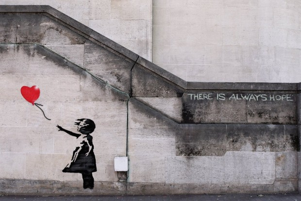

Ideation
https://i.kinja-img.com/gawker-media/image/upload/18kxsthjp9a32jpg.jpg
In the first workshop of the semester, we were challenged to identify both what Melbourne was to us, and what we believed the problems facing Melbourne were.
The first task, drawing mind maps relating to the central bubble of “Melbourne”, highlighted the diverse outlooks and experiences that even a group of very similar individuals (All computer science student’s at the University of Melbourne) could have in regards to the city they live in.
Some drilled down on the areas that they were clearly involved in beyond a passing interest, whilst others focussed on the expansive culture of Melbourne as a whole. Elements that were common to all of our mind-maps were food, drinking, and the street culture of Melbourne, with both public transport and nightlife also making repeat appearances.

The next phase of the ideation process was creating a wall of problems we perceived as afflicting the people of Melbourne. These problems ranged from infrastructural ones, such as delayed train services, to societal issues, such as the cultural disconnect between those living within Melbourne, and those from outlying regions.
Clustering the problems together, several groupings became apparent. Other than the so called Miss fits of “not enough drones” and “pubs are closing down”, areas such as Transport, Infrastructure and Poverty were clearly large concerns for the students in the workshop.However, looking at the clusters, no one problem set engaged with us as a team, and so it was back to the proverbial drawing board.
Looking back at our Mind-maps, we attempted to synthesize the problems that faced Melbourne, with what Melbourne meant to us as a group. Some ideas that were thrown around were improving the lives of the homeless, helping international students settle into university, or connecting people who share similar interests. However, we often found ourselves identifying solutions, rather than problems, and working backwards from there.
Throughout the process, a reoccurring theme was the culture found throughout Melbourne, be it the music, the food or the art. This was accompanied by the idea that maybe we could enhance the strengths of Melbourne, rather than fixing any of its flaws. And that is how we decided to focus on the are of street art.
Street Art

http://hubpages.com/art/banksy-girl-with-balloon
Street art takes many forms, including painted works using aerosol cans, cardboard and paper ‘paste ups’
- Christine Dew in her book ‘Uncommissioned Art’
There are undeniable benefits to allowing street art to be part of a city’s culture. Street art can serve as a tourist attraction, as demonstrated by the famous Hosier lane, and gives the cityscape a unique feel and look. It can also give people who don’t have the resources to launch more traditional art careers a shot. The City of Melbourne has embraced this fact, even going so far as to generate guides showing where to find the best street art within the CBD.
http://www.thatsmelbourne.com.au/Placestogo/PublicArt/Documents/Street_Art_Map_May_2016.pdf
However, the negative side of street art, the “tagging” of public and private property, cannot be ignored.

http://www.abc.net.au/news/2016-02-04/graffiti-feature-3/6961856
Tagging is seen as a menace to life quality, and a community’s security, being one of the most evident forms of criminal activity and disturbance. It also has the potential to impact negatively on the profitability of businesses and private investments, and is often linked to other criminal activities.
Graffiti can have a negative impact on community perceptions of safety and public amenity
- (Australian Government. Institute of Technology. Research in Practice. No. 6 2009, P. 1)
According to the Australian Institute of Criminology, graffiti costs the community around $200 million each year, not accounting for the other impacts of tagging beyond maintenance and repair costs. The City of Melbourne has recognised these negative effects of graffiti and has come up with a management plan as well as creating a website to allow for the reporting of graffiti, which clearly shows that this a problem that affects the lives of many who live in Melbourne.
Therefore, removing or reducing the extent of illegal graffiti, would Make Melbourne a Better Place to Live. Likewise, an emphasis on what might be considered true “Street Art” might enhance the street culture of Melbourne, in turn improving the quality of life within the city.
However the line between the Street Art and Tagging is not always clearly defined, and this will have to be considered in the solution design phase of this project.
http://graffitikings.co.uk/10-pics-prove-tagging-art/
In conclusion, the problem statement that our group will be attempting to answer is thus: